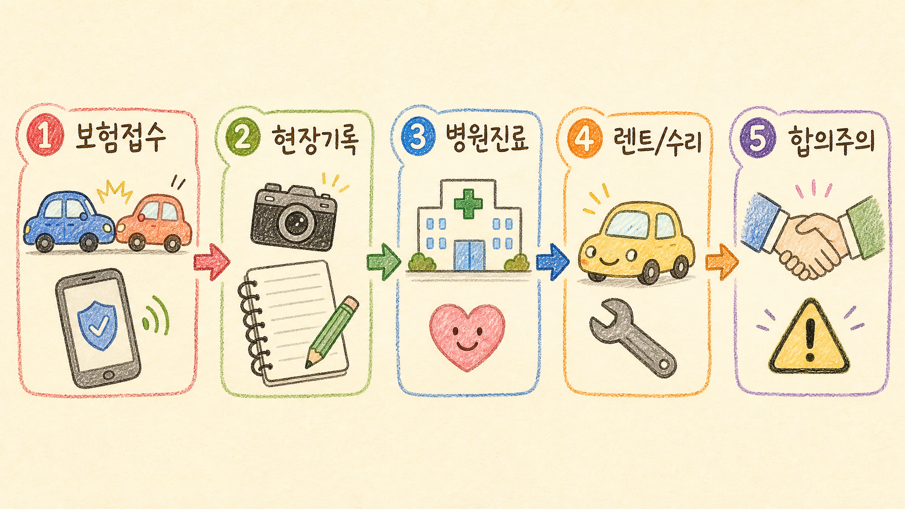
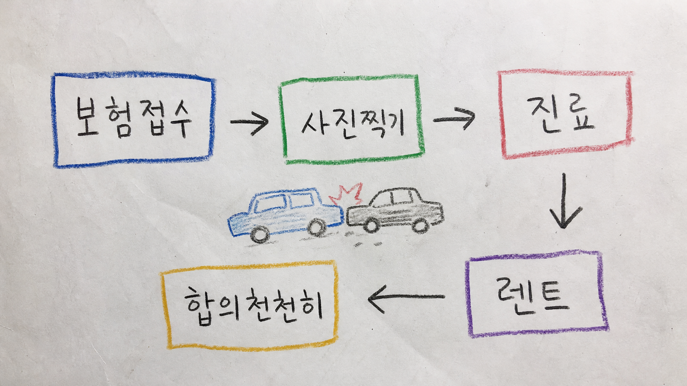
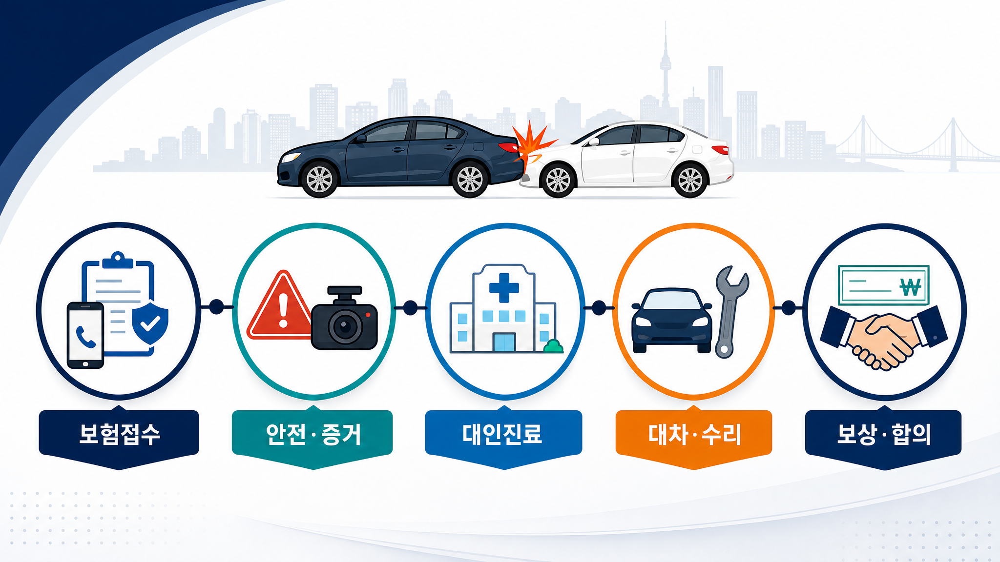

후방추돌 사고 절차 보고서
보험접수 → 현장 대응 → 병원 진료·치료 → 렌트카·대차 → 합의·보상까지, 한국에서 후방추돌을 당했을 때 피해자 입장에서 바로 확인할 절차를 정리했습니다.
짧은 고지: 이 보고서는 공개 자료 기반 일반 정보입니다. 개별 사고의 법률·의료 판단은 변호사, 손해사정사, 의사 등 전문가 상담을 대체하지 않습니다.
핵심 결론
- 🚨 먼저 안전 확보와 2차 사고 방지가 우선입니다. 사람이 다쳤거나 위험하면 119·112가 먼저입니다.
- 📸 사고 직후에는 차량 위치, 파손 부위, 도로 상황, 블랙박스, 상대 차량번호·연락처를 최대한 기록합니다.
- 📞 보험은 내 보험사에도 알리고, 상대 보험사에는 대인·대물 접수번호를 받아 병원·정비·렌트에 연결합니다.
- 🏥 목·허리 통증은 뒤늦게 나타날 수 있으므로 증상이 있으면 초기에 진료받고 기록을 남깁니다.
- ✍️ 합의는 치료 경과와 후유증 가능성을 본 뒤 진행하는 편이 안전합니다. 성급한 최종 합의는 되돌리기 어렵습니다.
보고서모드1 인포그래픽

기본 손그림 스타일: 미색 종이, 색연필·크레용, 손글씨 학습노트 느낌
보고서모드2 인포그래픽

저숙련·삐뚤빼뚤 실제 종이 스캔 느낌 손그림 스타일
보고서모드3 인포그래픽

깔끔한 고해상도 정보형 인포그래픽 스타일
1. 사고 직후 5분: 안전부터 확보
- 가능하면 비상등을 켜고, 탑승자를 도로 밖 안전한 곳으로 이동시킵니다. 고속도로·터널·야간처럼 2차 사고 위험이 큰 곳에서는 차량보다 사람 안전이 먼저입니다.
- 사람이 다쳤거나, 음주·무면허 의심, 뺑소니, 상대방과 사실관계 다툼, 교통 흐름 장애가 크면 경찰 신고를 우선 고려합니다.
- 도로교통법은 교통사고 발생 시 운전자에게 즉시 정차, 사상자 구호, 위험방지 조치, 필요한 경우 경찰 신고 의무를 둡니다.
2. 현장 증거: “나중에 말이 바뀔 수 있다”는 전제로 기록
| 기록 대상 | 왜 필요한가 | 체크 |
|---|---|---|
| 차량 위치·차선·신호·표지판 | 후방추돌이라도 급정거 사유, 차선변경, 끼어들기 등 과실 다툼이 생길 수 있음 | 넓은 사진 → 중간 거리 → 가까운 파손 부위 순서 |
| 상대 차량번호·면허·연락처·보험사 | 접수번호와 보상 담당자 연결에 필요 | 개인정보는 필요한 범위만 보관 |
| 블랙박스·CCTV 위치 | 충격 방향, 속도, 정차 여부 확인 | 블랙박스는 덮어쓰기 전 백업 |
| 통증·증상 발생 시각 | 진료 기록과 사고 인과관계 설명에 도움 | 목, 허리, 두통, 어지럼, 저림 등 메모 |
사진 촬영 때문에 도로 위에 오래 머물면 더 위험합니다. 2차 사고 위험이 크면 안전한 곳으로 이동한 뒤 가능한 범위에서 기록하세요.
3. 보험접수: 대인·대물 접수번호를 분리해서 확인
- 내 보험사에 사고 알림: 피해자라도 내 보험사에 먼저 알리면 현장 대응, 과실 상담, 자차·무보험차상해 등 선택지를 안내받을 수 있습니다.
- 상대 보험사 접수 요청: 후방추돌 가해차량 보험사에 대물 접수번호와 대인 접수번호를 요청합니다.
- 대물 접수: 차량 수리, 견인, 렌트·대차, 감가·휴차 등 차량 관련 손해 처리에 연결됩니다.
- 대인 접수: 병원 진료·치료비 처리를 위해 필요합니다. 접수번호를 병원 원무과에 전달합니다.
- 접수 거부·지연 시: 내 보험사의 도움, 경찰 사고접수, 교통사고사실확인원, 금융감독원 민원·분쟁조정 등 단계적 대응을 검토합니다.
4. 병원 진료·치료: “아픈데 괜찮겠지”로 넘기지 않기
초기 진료
목·허리 염좌, 두통, 어지럼, 손발 저림, 흉통 등이 있으면 정형외과·신경외과·응급실 등에서 진료받고 사고 경위를 설명합니다.
기록 관리
진단서, 진료확인서, 영상검사, 처방, 통원일자를 보관합니다. 합의 단계에서 치료 경과를 설명하는 근거가 됩니다.
치료 선택
자동차보험 진료는 관련 진료수가 기준과 심사 체계가 적용됩니다. 과잉진료 논란이 생기지 않게 증상과 필요성 중심으로 치료받는 것이 안전합니다.
주의: 통증은 사고 당일보다 다음 날 커지는 경우도 있습니다. 반대로 증상보다 과도한 치료를 받으면 보험사 심사·분쟁 리스크가 생길 수 있습니다.
5. 차량 수리와 렌트카·대차
| 항목 | 실무상 확인할 점 | 주의사항 |
|---|---|---|
| 정비공장 선택 | 보험사 협력업체, 제조사 서비스센터, 신뢰 가능한 공업사 중 선택 | 수리 범위, 교환·판금 여부, 예상 기간을 문자로 남기기 |
| 렌트·대차 | 상대 대물 접수번호로 같은 급 또는 약관 기준에 맞는 차량 대차 가능 여부 확인 | 과도한 고급차 렌트, 불필요하게 긴 대차기간은 삭감·분쟁 가능 |
| 교통비 대체 | 렌트하지 않는 경우 교통비 보상 가능 여부 확인 | 보험사별·약관별 기준 확인 필요 |
| 전손·장기수리 | 차량가액, 수리비, 부품 대기, 대차 인정기간 확인 | 전손 처리·미수선 수리비는 장단점 비교 |
자동차보험 표준약관은 대물배상, 자기차량손해, 지급보험금 계산, 보상하지 않는 손해 등 기본 틀을 제시합니다. 실제 대차료·수리비 인정은 사고 내용, 차량 등급, 수리 필요기간, 약관·특약에 따라 달라질 수 있습니다.
6. 합의·보상: 치료 종료 전 최종합의는 신중하게
- 보상 항목 확인: 치료비, 위자료, 휴업손해, 기타 손해, 차량 수리비, 렌트·교통비 등을 구분합니다.
- 치료 경과 먼저: 후유증 가능성이 있으면 충분히 경과를 본 뒤 합의합니다. 합의서 문구가 “일체의 청구를 포기”하는 구조인지 확인합니다.
- 과실비율 확인: 후방추돌은 뒤차 과실이 크게 보는 경우가 많지만, 앞차의 급정거·차선변경·불법정차 등 사정에 따라 다툼이 생길 수 있습니다.
- 자료 정리: 진료기록, 통원내역, 소득자료, 휴업 증빙, 수리 견적·영수증, 렌트 계약서를 보관합니다.
- 불만·분쟁: 보험사 설명이 납득되지 않으면 근거 약관과 산정내역을 요청하고, 필요 시 손해보험협회 상담, 금융감독원 민원·분쟁조정, 법률상담을 검토합니다.
7. 반대의견·리스크·주의사항
| 쟁점 | 반대의견·리스크 | 실무 대응 |
|---|---|---|
| “후방추돌은 무조건 100:0” | 대체로 뒤차 책임이 크지만, 앞차의 급차선변경·이유 없는 급정거·불법정차 등은 과실 다툼이 될 수 있음 | 블랙박스·차선·신호·정차 사유 기록 |
| “아프면 오래 치료할수록 유리” | 의학적 필요성보다 과도한 치료는 심사·분쟁·보험사기 의심 리스크 | 증상·진단·의사 소견 중심으로 치료 |
| “렌트는 아무 차나 오래 가능” | 약관 기준을 넘는 차급·기간은 삭감될 수 있음 | 대차 가능 차급·인정기간을 담당자에게 문자 확인 |
| “합의금 제안이 오면 바로 끝내자” | 최종합의 후 추가 청구가 제한될 수 있음 | 치료 경과, 후유증, 소득손해 확인 후 서명 |
| “경찰 신고는 무조건 불리하다” | 인명피해·다툼·음주 의심 사고에서 신고를 미루면 사실확정이 어려워질 수 있음 | 상황별로 112 신고 또는 교통사고 접수 검토 |
8. 피해자 체크리스트
- 현장 비상등, 안전지대, 부상 확인, 112·119 판단
- 증거 차량 위치, 번호판, 파손부위, 블랙박스 백업, 목격자
- 보험 상대 보험사 대인·대물 접수번호, 담당자 이름·연락처
- 병원 접수번호 전달, 사고 경위 설명, 진단·처방·통원기록 보관
- 차량 견인·정비공장·수리기간·렌트차급·교통비 기준 확인
- 합의 치료 경과 확인, 산정내역 요청, 합의서 문구 확인
공개 근거·참고자료
- 국가법령정보센터, 도로교통법 제54조 사고발생 시 조치: https://www.law.go.kr/법령/도로교통법/제54조
- 국가법령정보센터, 자동차손해배상 보장법: https://www.law.go.kr/법령/자동차손해배상보장법
- 손해보험협회 자동차보험 종합포털, 자동차보험 표준약관: https://carinfo.knia.or.kr/lmxsrv/law/lawDetail.do?SEQ=3&LAWGROUP=1
- 국가법령정보센터, 자동차보험진료수가 심사업무처리에 관한 규정: https://law.go.kr/LSW/admRulLsInfoP.do?admRulSeq=2100000196067
- 정부24, 교통사고사실확인원 발급 신청 안내: https://www.gov.kr/mw/AA020InfoCappView.do?CappBizCD=13200000034&HighCtgCD=A08004
- 금융감독원, 금융민원·분쟁 관련 안내: https://www.fss.or.kr/
최종 정리
후방추돌 피해자는 안전 확보 → 증거 기록 → 대인·대물 보험접수번호 확보 → 필요한 진료 → 수리·대차 기준 확인 → 치료 경과 후 합의 순서로 움직이면 됩니다. 핵심은 감정적으로 서두르지 않고, 모든 연락·치료·수리·비용 근거를 남기는 것입니다.
주의: 사고가 경미해 보여도 신체 증상과 법적 책임은 별개입니다. 반대로 무리한 치료·렌트·청구는 분쟁을 키울 수 있으니, 실제 손해와 필요성 중심으로 처리하세요.
Jeremy's Insight by 🤖 딸깍봇 https://blog.naver.com/jeremylee0213